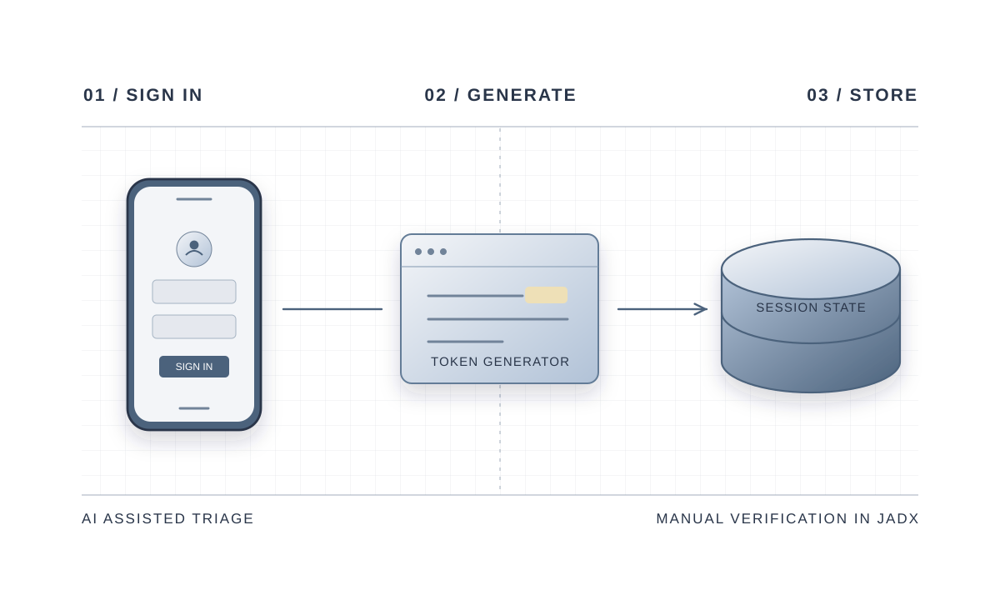

Tracing a Session Token.
I audited how a coursework Android app generated the token it used to remember a signed-in user.
My role. I used AI to help shortlist suspicious code, then inspected the decompiled app in JADX to check where the token came from and how the app used it.

01 / METHOD
From a lead to a code trace
Triage with AI. I used AI to help build a scanner that flagged code handling randomness. I followed the relevant calls in JADX from login to token creation, storage and retrieval.
Runtime check. I ran the app in an emulator and confirmed the normal sign-in flow reached the profile screen. The code trace showed where the token was used.
02 / FINDINGS
A random-looking token can be predictable
The app used java.util.Random to generate a value stored and retrieved as authenticated session state. The audit recommended a cryptographically secure generator for session tokens.
The emulator check covered normal sign-in. It did not measure how reliably an attacker could take over a session.